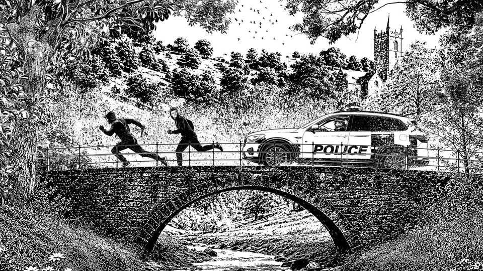
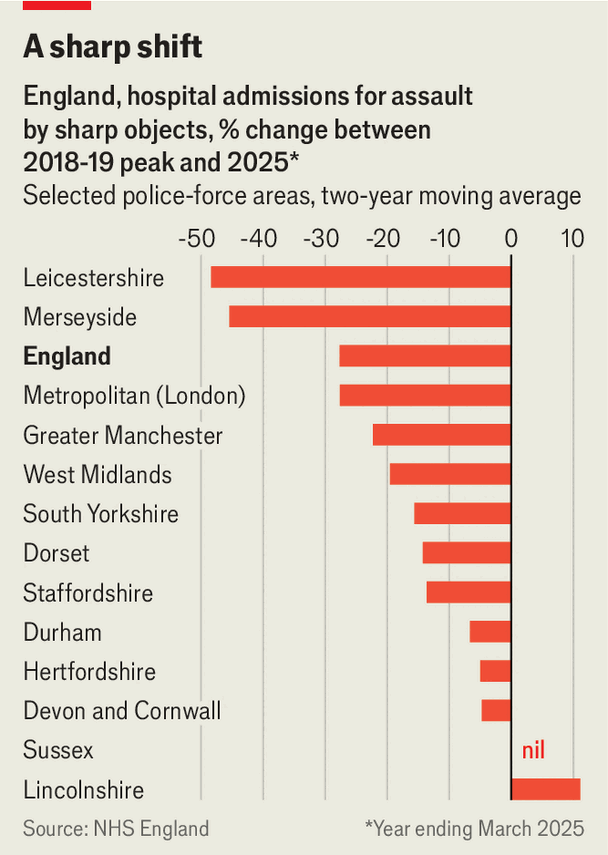

The changing geography of violent crime in Britain
Violent crime is falling fastest in cities like London. It’s the counties you should worry about

Sep 3rd 2026
On January 28th 2022, 18-year-old Joe Dix was found lying in the street. He had been stabbed seven times by members of a rival drugs gang—one of them wielding a 24-inch (61cm) sword. Dix died an hour later. “His insides were coming out,” his partner would later tell the court.
Where do you think this happened? London, notorious for knife crime, is an obvious choice. Birmingham, Manchester and Liverpool, each with its own history of gang violence, are others. In fact Dix was murdered in Norwich, a small, quaint city the Sunday Times recently crowned the best place to live in Britain.
More than 70% of Britons believe knife attacks are rising across the country. They are not. Hospitalisations for “assault by sharp object”, one of the most reliable indicators of violent crime, have fallen by a third in England since 2019. Last year homicides fell to a 50-year low.
Social media’s doomsterism goes some way to explaining this disconnect, as do spikes in shoplifting and phone snatching. A less appreciated reason is that the geography of violent crime is changing. The urban centres historically associated with violence have achieved impressive reductions over the past decade. Rates have fallen much more slowly in the counties. In some they have increased.
Consider Birmingham, London and Manchester. In the year to March 2018, the start of Britain’s knife-crime epidemic, these three cities accounted for 47% of the country’s knife-related homicides and attempted murders. In the year ending March 2026 this was down to 36%. In each city, homicides have fallen by more than 30% from their peak. Progress has been much slower in places like Suffolk (down by 18%), Hampshire (14%), Nottinghamshire (13%) and Cambridgeshire (up 23%).

Hospitalisations for “assault by sharp object” show a similar pattern. Most police forces have data only up to the year ending March 2025. Look at a two-year rolling average and London’s is down by 28% from the peak years of 2018 and 2019. Much more modest falls have taken place in Staffordshire (down by 14%), Durham (7%), Devon and Cornwall (5%) and Hertfordshire (5%). In Sussex there has not been any drop at all (see chart).
Hospitalisation rates are growing fastest, albeit from a low base, in Cambridgeshire and Bedfordshire—leafy, suburban communities that last year suffered increases of 60% and 50%, respectively. Middlesbrough, a poor town but not one that has a long history of severe street violence, is recording more sharp-object hospitalisations than it did during Britain’s peak years. Following the deaths of two police officers and seven other people, and growing public disorder, it has become the site of an organised-crime investigation. Even within London, police-recorded violence is growing fastest in boroughs such as Hillingdon (up by 9% last year) and Kingston upon Thames (up by 13%), which are relatively affluent areas on the outskirts. Overall the upsurge of the 2010s is proving most resilient outside the urban centres usually associated with violent crime.
This is largely the result of changes in the structure of Britain’s drugs market. Violent crime in Britain is closely linked to drug trafficking. This is as true in the counties as it is in cities. A study published in 2021 looking at six years’ worth of air-ambulance call-outs in Kent, for example, found that instances of “penetrating trauma” tend to occur along drug-trafficking routes. These “county lines” emerged in the late 2010s as the advent of the dark web (used more for wholesale drug purchases than retail), together with cuts in police numbers, led to a proliferation of drug gangs in urban centres. Competition between them was the main cause of Britain’s knife-crime surge in the late 2010s.
It also brought more violence to the counties, as gangs looked for less crowded markets outside the cities. They built a business model using vulnerable children as mules—ferrying deliveries from urban gangs to rural addicts. Knives are a way to protect yourself, and your product, from rivals who would take it.
Thankfully most areas are recording less violence than they did during this first wave of expansion. But rural violence is proving sticky because such areas remain the most profitable route to growth for drug-dealing groups. In 2020 a Home Office review found that the levelling-off of urban drug use was driving gangs towards new markets around towns and universities. According to annual threat assessments, the number of county lines known to the authorities has increased from 720 in 2017 to more than 6,500 today. The dealers have also expanded their product lines. While the original county-lines gangs dealt mainly in crack and heroin, they now also traffic in cannabis, powdered cocaine, ketamine and prescription drugs.
Increased competition in rural areas has created a market based on customer service. Above all that means speedy deliveries. In many British towns it is now possible to have drugs delivered within an hour—think Amazon Prime for amphetamines. That is a difficult service for a business based in London to provide for customers in Margate. Supply lines have had to adapt. “The classic county-lines model of sending your boys down on the train has gone,” explains Simon Harding, a criminologist. “It’s much easier to set up a local hub and deal from there.”
The result is that drug gangs are increasingly indigenous to rural areas, dealing from local properties and recruiting local children. The number of “internal lines” (those operating within rather than between counties) known to the police trebled between 2022 and 2025. The share of lines originating in “task-force areas” (covering the traditional hotspots) fell from 70% to 50%.
It is a shift the government appears unprepared for. The Knife Crime Action Plan, released at the start of April, says a lot of the right things. But it also adopts an outdated definition of the county-lines model—promising to empower the British Transport Police to disrupt the train networks used to move drugs from cities to towns, and to boost funding to County Lines Taskforces. This targets a business model that is already changing.
When so much violence is perpetrated by vulnerable young people recruited by predatory organised criminals, prevention is a public-health problem as much as a policing one. In the traditional hotbeds of knife violence, local experience with gangs has produced a certain amount of understanding of criminal practices, from clued-up family members to streetwise youth workers. Rural areas lack that kind of exposure. Many are used to seeing knife crime as an urban, even a racial, problem best solved by tougher policing. “That is a very difficult mindset to get out of,” admits Niven Rennie, a former police officer who served as director of the Scottish Violence Reduction Unit. “But once you understand it, you don’t go back.” ■